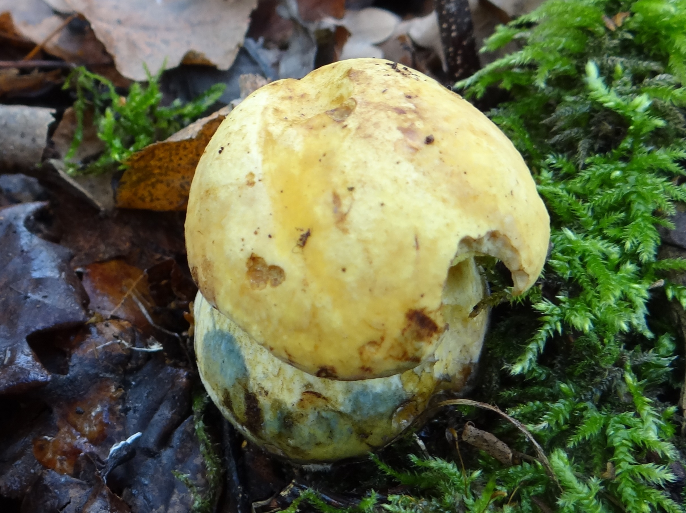
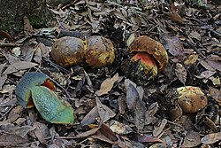
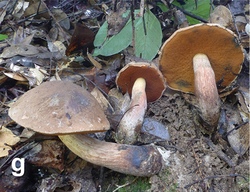
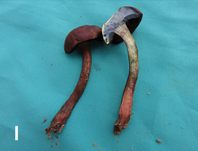

NEOBOLETUS

--picture of a Neoboletus
About Neoboletus
Neoboletus is a genus of fungi in the family Boletaceae, native to holarctic regions. It was circumscribed in 2014 by Italian mycologists Matteo Gelardi, Giampaolo Simonini and Alfredo Vizzini, and further by Chinese mycologists Gang Wu and Zhu L. Yang in 2015. Closely related to the genus Sutorius, members of this genus differ by staining blue when bruised. They have brown pores and lack a reticulated pattern on their stipes. The erection of Neoboletus follows recent molecular studies that outlined a new phylogenetic framework for the Boletaceae. The type species is Neoboletus luridiformis. Five species were added to the genus by Gelardi and Vizzini in 2014.
There are over 18 species of Neoboletus!



--Some examples of Neoboletus